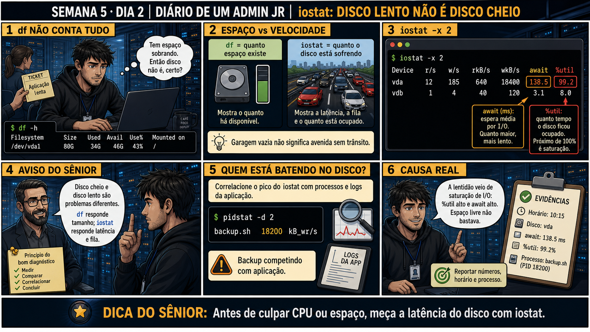

DIARIO DE UM ADMIN JR. | FASE 1 — LINUX, DO BÁSICO AO AVANÇADO
🔗 Conecta com a Semana 1, Dia 4: lá você aprendeu df -h pra medir espaço. Hoje o
sintoma é diferente: o ticket diz "aplicação lenta", você olha df -h e vê espaço sobrando — mas espaço
sobrando não prova que o disco está rápido. Espaço e velocidade são duas perguntas diferentes.
🔓 Privilégio de hoje: medir latência de disco com iostat. Você ganha o hábito
de nunca concluir "disco não é o problema" só porque df -h mostra espaço livre — %util e await contam a
história real da velocidade.
Semana 5 · Dia 2 | Nível Júnior
iostat: Disco Lento Não é Disco Cheio
antes de culpar CPU ou espaço, meça a latência do disco com iostat
ANTES DE ALTERAR, OBSERVE. DEPOIS DE ALTERAR, VALIDE.

1. O chamado
Ticket: "aplicação lenta". df -h mostra 46G disponíveis de 80G — bastante
espaço. Um colega já conclui "então não é disco" — mas essa conclusão mistura duas perguntas diferentes:
quanto espaço existe versus quão rápido o disco está respondendo.
💡 Passa o mouse nas palavras destacadas pra ver uma dica rápida — clica se quiser a explicação completa com analogia.
2. O sênior te conta
🧑🏫 antes dos termos técnicos, a história de hoje
Hoje o ticket dizia "aplicação lenta". O Júnior rodou df -h — hábito da Semana 1 — e viu
46G disponíveis de 80G. "Então não é disco", ele já ia escrever no ticket. Parei ele: "espaço e
velocidade são perguntas diferentes. Garagem vazia não significa avenida sem trânsito."
Rodamos iostat -x 2, e o disco vda mostrava 99,2% de utilização e 138,5ms de
espera média — saturado, apesar de ter espaço de sobra. É uma avenida com garagem vazia mas todos os
semáforos vermelhos ao mesmo tempo. Fomos além com pidstat -d e achamos o culpado:
backup.sh escrevendo intensamente no mesmo horário, competindo pelo mesmo disco que a
aplicação usava.
O Júnior quis matar o backup na hora. Segurei: interromper um backup no meio pode gerar dado corrompido
ou backup incompleto — é uma ação com consequência real, precisa de aprovação, não decisão no calor do
momento. E teve mais um mal-entendido comum: ele viu %util em 99% e achou que o disco ia "quebrar".
Expliquei que %util mede SATURAÇÃO de uso, não SAÚDE física — um disco saudável pode chegar a 99% sob
carga alta sem estar com defeito nenhum.
3. Decodificador de conceitos
Clica em qualquer termo pra ver a definição completa e uma analogia do dia a dia:
4. Ferramentas e leitura da evidência
Coluna do iostat -x
O que observar e por que importa
%util
Porcentagem do tempo que o disco ficou ocupado — perto de 100% é saturação.
await (ms)
Tempo médio de espera por uma operação de disco — quanto maior, mais lento pra quem está esperando.
Segurança: execute os testes apenas em VM descartável e confirme nomes de discos, hosts e arquivos antes de cada comando.
Ação: Rode iostat em estado normal e anote os valores de referência.
sudo apt install sysstat
iostat -x 2
Resultado esperado: valores baixos de %util e await em estado saudável.
Por que fizemos isso: ter o baseline de %util/await é o que permite reconhecer rápido quando um disco real está saturado — sem essa referência, não dá pra saber o que é "alto".
Cilada comum: olhar só a primeira linha do iostat, que é a média desde o boot, não o estado atual — as linhas seguintes é que mostram o momento real.
Ação: Gere carga de escrita de teste e observe o iostat durante a operação.
dd if=/dev/zero of=teste.img bs=1M count=500
Resultado esperado: %util subindo visivelmente enquanto o dd está rodando.
Por que fizemos isso: ver %util subir de propósito, sabendo a causa exata (o próprio dd), é o treino que fixa o reconhecimento desse padrão pra um chamado real.
Cilada comum: rodar esse teste num disco de produção real — dd escreve pesado, sempre use um disco/VM descartável pra esse tipo de teste.
🧑🏫 Aqui entra o Mentor (em breve): se %util e await parecerem contraditórios, este é o ponto onde o chat com o Sênior-IA vai ajudar a interpretar o padrão.
Ação: Identifique o processo responsável pela carga com pidstat.
pidstat -d 2
Resultado esperado: o processo dd aparecendo claramente como o maior consumidor de I/O.
Por que fizemos isso: pidstat -d é o que transforma "o disco está saturado" em "ESTE processo específico está saturando o disco" — a diferença entre sintoma e causa acionável.
Cilada comum: parar em %util alto sem rodar pidstat — sem identificar o processo, você não tem quem investigar ou quem pedir aprovação pra agir.
Ação: Remova o arquivo de teste e confirme o retorno ao normal.
rm teste.img
iostat -x 2
Resultado esperado: valores retornando à linha de base do passo 1.
Por que fizemos isso: validar o retorno ao normal prova que a causa identificada era realmente a certa — se %util não baixasse, a causa real seria outra.
Cilada comum: esquecer de confirmar o retorno ao normal — sem essa validação, você fecha o laboratório sem prova de que entendeu a causa corretamente.
Ação: Documente sintoma, evidência, processo identificado e ação tomada.
# não é comando de shell — é o registro final
# ex: "Sintoma: lenta, espaço ok (df). Evidência: vda %util 99,2%, await 138,5ms. Processo: dd (teste). Ação: encerrado, retornou ao normal."
Resultado esperado: registro completo reproduzindo o painel 6 da prancha de hoje.
Por que fizemos isso: registrar %util e await exatos (não "estava lento") é o que dá ao relatório valor de comparação em investigações futuras no mesmo servidor.
Cilada comum: documentar "problema de disco" sem separar claramente espaço de velocidade — essa confusão é exatamente o que a aula de hoje existe pra evitar.
6. Antes de ver as opções — tenta responder
🧠 Recall ativo: qual é a diferença entre o que df mede e o que
iostat mede?
df mostra quanto espaço
existe disponível. iostat mostra quão
rápido o disco está
respondendo agora — garagem vazia não significa avenida sem trânsito. São perguntas independentes, um
"sim" numa não responde a outra.
QUESTÃO 1 de 3
7. Questão comentada — clica numa alternativa
df -h mostra espaço sobrando, mas a aplicação continua lenta. O colega já
descartou disco como causa. Qual é a atitude correta?
💡 Analogia do Sênior para Fixar: O comando 'iostat -xz 1' é o velocímetro individual dos discos: mostra a velocidade de leitura/escrita e a porcentagem de tempo em que o disco trabalhou ocupado (%util).
QUESTÃO 2 de 3 — cenário de erro real
7.1 pidstat -d aponta o processo backup.sh escrevendo 18200 kB/s — o que fazer com isso?
Correlacionando o pico de %util com processos ativos, pidstat -d 2 mostra
backup.sh escrevendo intensamente no mesmo período do pico.
Qual é a conclusão correta diante dessa correlação?
💡 Analogia do Sênior para Fixar: A coluna '%util' próxima de 100% no disco é a esteira rolante no limite: não importa se a CPU é veloz, as requisições estão empacadas esperando o braço do disco ler os setores.
QUESTÃO 3 de 3 — detalhe que confunde todo iniciante
7.2 "%util em 99% já significa que o disco vai quebrar, certo?"
Um colega vê %util 99,2% e assume que o disco está prestes a falhar fisicamente.
Essa interpretação está correta?
💡 Analogia do Sênior para Fixar: A métrica 'await' (tempo médio de espera de I/O) alta é a fila do pedágio em feriado: cada pacote ou leitura demora dezenas de milissegundos a mais para ser liberado.
8. Procedimento profissional
Nunca conclua "não é disco" só porque df mostra espaço livre.
Rode iostat -x pra medir %util e await, as métricas reais de velocidade.
Se saturado, use pidstat -d pra identificar o processo responsável.
Correlacione o pico de I/O com o horário do sintoma reportado.
Reporte com números exatos: %util, await, processo identificado.
Prevenção — o que evita repetir esse tipo de problema
Reagende jobs de I/O intensivo (como backups) pra horários de baixo uso da aplicação,
documentando essa janela no runbook — evita a contenção de disco se repetir todo dia. Configure alertas de
monitoramento baseados em %util/await sustentados, não só espaço em disco, pra pegar saturação antes de
virar ticket de "aplicação lenta".
9. Validação e encerramento
Espaço livre não foi confundido com disco rápido.
%util e await foram medidos antes de descartar disco como causa.
O processo responsável pela carga foi identificado com pidstat.
Nenhuma ação drástica (troca de disco, kill de processo) foi tomada sem essa evidência.
Rollback e limites
iostat e pidstat são somente leitura — não existe rollback. O limite real é agir
contra um processo (como um job de backup) sem entender o impacto de interrompê-lo no meio da execução.
💡 Sobre repetição espaçada: "espaço e velocidade são perguntas diferentes"
espelha "carga e histórico são perguntas diferentes" do Dia 1 de ontem — o mesmo padrão de duas métricas
independentes contando a história completa. O Anki vai conectar os dois.
10. Resposta final
Alternativa correta: B. Nesta aula, a decisão correta foi rodar
iostat -x 2 pra medir %util e await antes de descartar disco como causa. O ponto central do caso é este:
antes de culpar CPU ou espaço, meça a latência do disco.
🔓 O que você desbloqueou hoje
Capacidade de medir latência de disco corretamente, sem confundir espaço com
velocidade. Amanhã você aprende mpstat — quando a média geral de CPU esconde um único núcleo gritando
sozinho.